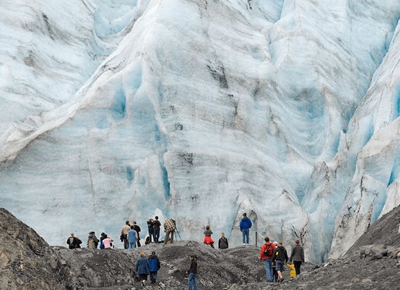
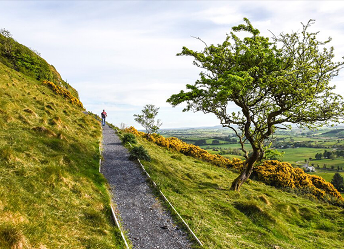

NATIONAL GEOGRAPHIC
Salmonella can be deadly. Here’s how to protect yourself from it.
SCIENCE
Salmonella has struck again. Grocery stores across the United States recalled cantaloupes in early December after discovering that whole and pre-sliced portions of the fruit were responsible for illnesses and two deaths across 34 states. The contamination was also found in Canada, where public health officials also ordered a recall.
Such outbreaks are fairly common: The U.S. Centers for Disease Control and Prevention says salmonella bacteria cause more than a million infections, thousands of hospitalizations, and more than 400 deaths every year in the United States illnesses that most often begin as a result of handling or consuming infected food.
What is salmonella?
“Salmonella is a bacteria so not to be confused with a virus,” says Brian Coombes, chair of the biochemistry and biomedical sciences department at McMaster University in Hamilton, Ontario. The source is “usually contaminated food sometimes contaminated water but in North America mostly contaminated food, because we have good water hygiene and good water sanitation.”
An infection with salmonella can look a lot like stomach flu the symptoms include diarrhea, fever, and stomach cramps, and last between four to seven days.
What foods are most at risk?
“It really runs the gamut,” Coombes says. Salmonella is often found in vegetables and fruits which, after all, are usually grown outdoors and can come into contact with contaminated soil, manure, and water. “Most people don't cook their fruits before they eat them. Hopefully they wash them. But people also like to eat raw vegetables.”
Meat can also be problematic especially, but not only, if it’s undercooked. “The concern is you handle that raw chicken before cooking and it gets on your hands and you don't wash your hands,” says Scott Roberts, the associate medical director in charge of infection prevention at Yale School of Medicine. Undercooked eggs and dairy products can also be a problem.
Is salmonella contagious?
Yes. “Most of the time it's [transmitted] person-to-food-to-person, or animal to person directly, or animal-food-person,” Coombes says. “But can you spread salmonella infections from person to person? Most definitely.”
Infected people need to be careful, even after symptoms end. “I think most people are most contagious when they have diarrhea, and when the diarrhea resolves the contagiousness goes away,” Roberts says. “But there are these chronic carriers who can still have it and spread it.” That condition can last for several weeks or even a few months.
How harmful is it to humans?
“In most people, I would say this is a self-limited illness that will go away in a few days, and you really don't have to worry about it,” says Roberts. The biggest problem they’ll face during this time is usually dehydration.
In a few cases, though, “people get quite critically sick and need to get into the hospital because of an immune suppression,” Coombes says. Those acute cases can be difficult to treat. “The challenge that clinicians are facing now is that salmonella and other bacteria … are becoming very resistant to many of our existing antibiotics,” he says. “There’s no pill on the shelf that can actually work against certain strains.”
Comments :
- john Very good
- john Very good
Leave a Reply
Your email address will not be published. Required fields are marked*
Related posts:
-
Some U.S. national parks are trying to go carbon-free. What does that mean for visitors
Visiting at night and taking free public transportation are just two of the ways the National Park Service is encouraging visitors to go green.
View article -
Inside the Irish ‘hell caves’ where Halloween was born
In the middle of a field in a lesser known part of Ireland is a large mound where sheep wander and graze freely. Had they been in that same location centuries ago, these animals might have been stiff with terror
View article -
Is World Heritage status enough to save endangered sites
In December 2016, the city government of Vienna, Austria, announced what sounded like welcome news at the time: A public-private partnership had formed to build a new ice-skating rink just outside the city’s century-old
View article